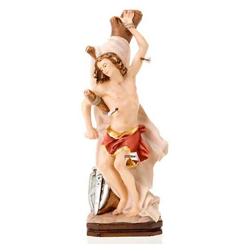

A Saint for All Time
The
Protector
of the Faith
St. Sebastian was eventually captured and executed once again, this time by beheading.
Despite his brutal death, his legacy lives on, and he is revered as a martyr for the faith.
St. Sebastian is the patron saint of athletes, soldiers,
and the plague-stricken. His example of courage and devotion
has inspired generations of Christians and continues to do so in the present sense.
